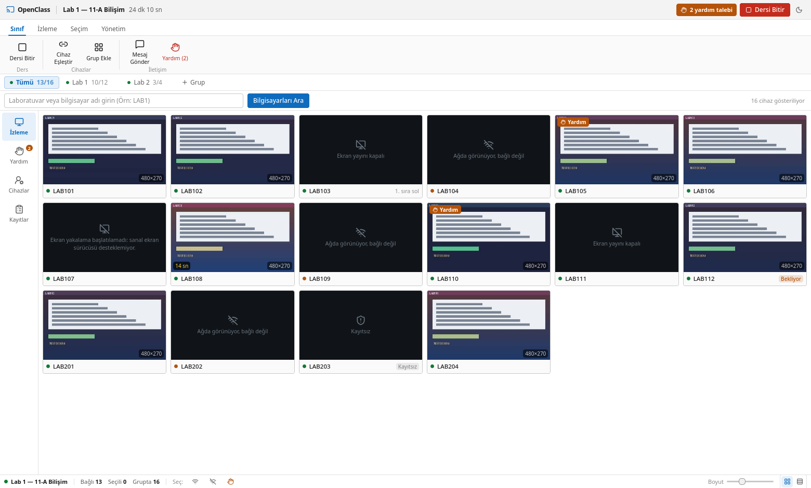

OpenClass, bilgisayar laboratuvarları için sınıf yönetim yazılımıdır. Öğretmen yerel ağdaki bilgisayarları bulur, altı haneli kodla eşleştirir, ekranlarını canlı izler ve izin verildiği ölçüde devralır. Ticari NetSupport School'un karşılığı; lisans sunucusu, abonelik ve bulut hesabı yok.
Aşağıdaki belge neyin çalıştığını, neyin yalnızca kod düzeyinde hazır olduğunu ve neyin hiç yapılmadığını madde madde ayırır.
§ 1 — KAPSAM
Öğretmen konsolu bütün yetkiyi taşır ve bağlantı sunucusunu kendi içinde barındırır; ayrı bir sunucu makinesi yoktur. Öğrenci tarafı yalnızca bir ajandır.
OpenClass-Teacher.exe
OpenClass-Student.exe
§ 2 — PROTOKOL
Üç kanal: keşif için şifresiz UDP, yetkili trafiğin tamamı için TLS üzerinden WebSocket, öğretmen ekranının çok alıcıya dağıtımı için şifreli multicast.
UDP 7644 / 7645 keşif ve duyuru şifresiz, yetki vermez, oda adını taşır TCP 7643 TLS + WebSocket MessagePack; yetkili bütün trafik UDP 7646 öğretmen ekranı ChaCha20-Poly1305; oturum anahtarı TLS'ten gelir kimlik cihaza özgü Ed25519 anahtarı + TLS parmak izi sabitleme eşleştirme 6 haneli kod; sertifika o anda sabitlenir ekran verisi yalnızca değişen bölgeler, ham JPEG, ikili çerçeve (Base64 yok) yedek yol multicast paketi ulaşmayan öğrenciye TLS unicast
Ayrı bir “dersi başlat” adımı yoktur: konsol açıkken bağlanan bilgisayarların önizlemesi kendiliğinden gelir, konsol kapanınca bütün yayınlar, kilitler ve uzaktan kontrol durur.
§ 3 — DOĞRULAMA DURUMU
Bir sınıf yönetim yazılımı yarım çalışırsa dersi bozar. Bu yüzden durum, pazarlama diline çevrilmeden README ve docs/TEST-PLANI.md ile aynı biçimde listelenir.
§ 4 — ARAYÜZ
Yoğunluk bilinçli: tipografi 12–13 px, satır yükseklikleri 26–32 px, köşeler küçük, gölge neredeyse yok. Renkler Windows'un Fluent paletine yakın tutuldu ki uygulama işletim sistemine yabancı durmasın.

§ 5 — DAĞITIM
Kurulumsuz sürüm çoğu makinede yeter: WebView2 çalışma zamanı Edge ile dağıtıldığı için güncel Windows 10 ve bütün Windows 11 kurulumlarında zaten vardır. Kurulum paketini WebView2'si olmayan makineler için indirin — LTSC sürümleri, Edge'in kaldırıldığı sistemler.
| Dosya | Tür | Boyut |
|---|---|---|
| OpenClass-Teacher.exe | Kurulumsuz önerilen | ~11 MB |
| OpenClass-Student.exe | Kurulumsuz önerilen | ~9 MB |
| OpenClass.Teacher_0.2.0_x64-setup.exe | NSIS kurulum, WebView2 içinde | ~220 MB |
| OpenClass.Student_0.2.0_x64-setup.exe | NSIS kurulum, WebView2 içinde | ~220 MB |
| SHA256SUMS.txt | Bütünlük özetleri | — |
Rehberler: öğretmen · öğrenci kurulumu · test planı
§ 6 — YETKİ SINIRLARI
Bu yazılım öğrencilerin bilgisayarlarını izliyor. Yetkinin nerede bittiğini yazmak özellik listesi kadar önemli.
Tam metin: SECURITY.md. Okulunuzda denediyseniz sonucu bildirin — hangi Windows sürümü, kaç makine, ne çalıştı. Saha geri bildirimi şu an projenin en çok ihtiyaç duyduğu şey: issue açın.